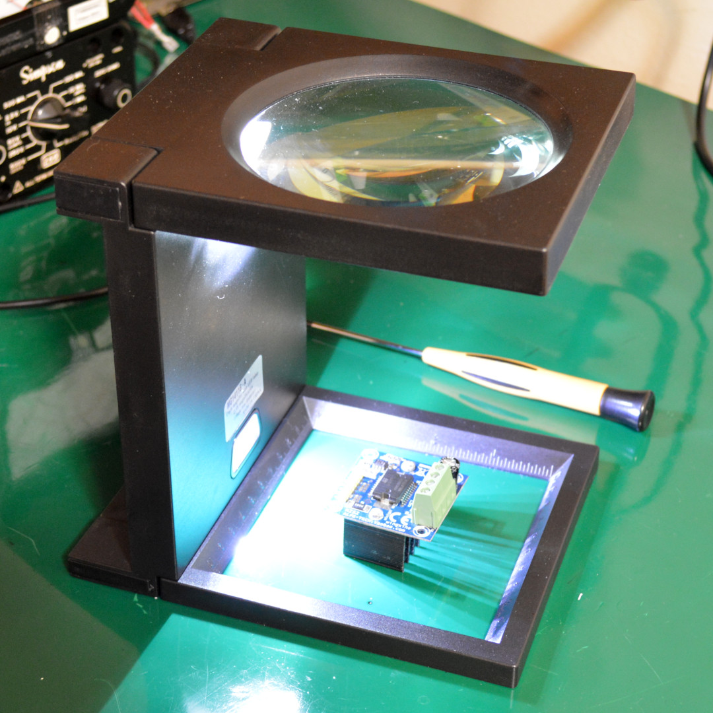
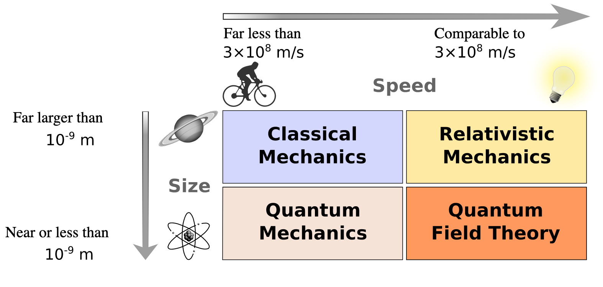
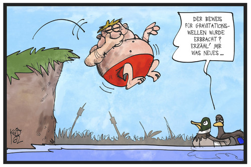
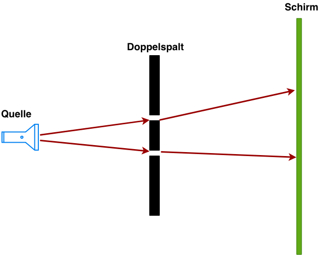
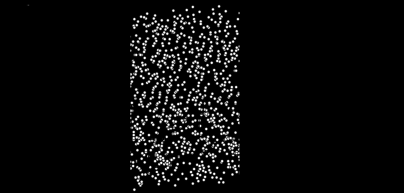
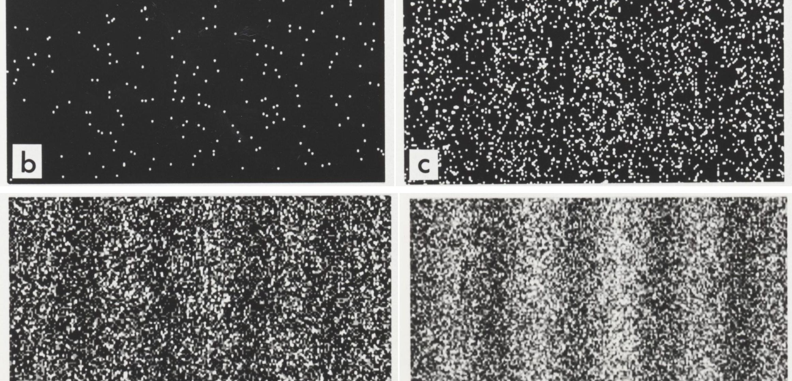
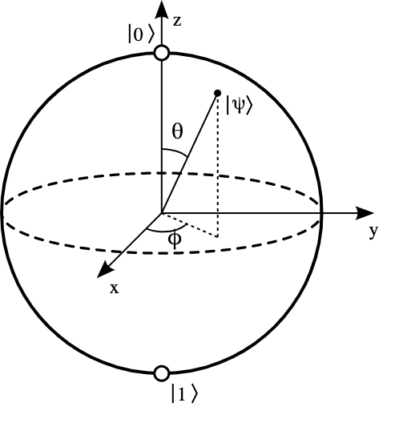
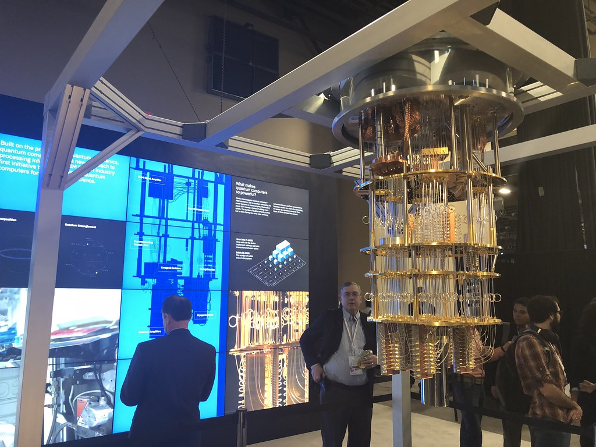
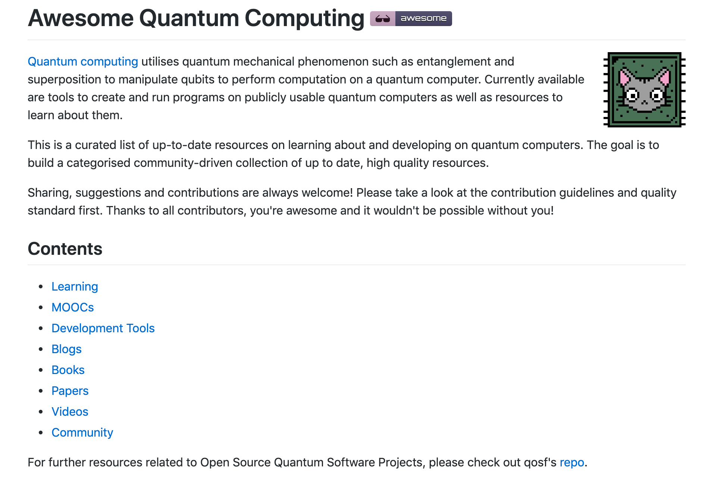

Worum es heute geht

Worum es heute geht
About us
Oliver Koch
- Softwareentwickler bei Micromata
- Parallel Studium Nanoscience in Kassel
- Laufen, Gitarre spielen, Naturwissenschaften
About us
Matthias Altmann
- Interessen: Security + Softwareentwicklung
- kein ausgebildeter Physiker
Aufbau
- Einführung - Matthias
- Quantenmechanische Grundlagen - Oliver
- Quantencomputer - Matthias
Vorteil Quantencomputer
Parallelisierbarkeit
Entnommen https://pixabay.com, Di 11.Juni 2019
Massive Geldmittel
- National Quantum Initiative Act / Unternehmen / NASA - USA
- China
- Europa
Entwicklung Markt
Entwicklung Markt - Beispiel
QCaaS
Algorithmen
- Simulationen
- Suche
- Krypto
- Klassifikation
Einordnung
Größenentwicklung
Entnommen https://upload.wikimedia.org, Di 11.Juni 2019
Einordnung
Klassisch - Transistoren
Entnommen https://upload.wikimedia.org, Di 11.Juni 2019
Einordnung
Entnommen https://upload.wikimedia.org, Di 11.Juni 2019
Klassische Physik
Ursache -> Wirkung

Aufbau Doppelspalt-Experiment
Ohne Trennwand

Ein offener Spalt
Zwei offene Spalte
Zwei offene Spalte

WTF???
Messung beeinflusst Ergebnis
Wahrscheinlichkeit/ Zufall
Basics
| Klassisch | QC |
|---|---|
| Ergebnis eindeutig | Ergebnis mit Wahrscheinlichkeit / Zufall |
| Messung einmal | Messung mehrmals |
Basics - Typen
- General Purpose
- Specific Purpose
Basics
- Qubit
Basics - Blochsphere
Entnommen https://upload.wikimedia.org, Di 11.Juni 2019
Basics - Superposition
Zwischen 0 und 1
Basics - Entanglement

Basics
Quantum GatesBasics
AlgorithmsBasics - Construction
- Superconducting (IBM Q, Google Bristlecone)
- Ion Trap
- Topologic
- Nuclear Magnetic Resonance
- ...
Basics - Ion Trapping QC

Entnommen https://commons.wikimedia.org, Mi 12.Juni 2019
Basics - Supraleitender QC - IBM Q
Entnommen https://www.flickr.com/photos/epredator/40239193864, Mi 13.Juni 2019
Basics
CompanysBasics
ConstructionAlgorithmen - Krypto
- Shor's Algorithmus: Revolution!
- Gängige asymmetrischen Methoden gebrochen (RSA, EC, Diskrete Logarithmen)
vgl. Peter W. Shor, Polynomial-Time Algorithms for Prime Factorization and Discrete Logarithms on a Quantum Computer, 1995
Algorithmen - Krypto
- Shor's Algorithmus: Revolution!
- Gängige asymmetrischen Methoden gebrochen (RSA, EC, Diskrete Logarithmen)
vgl. Peter W. Shor, Polynomial-Time Algorithms for Prime Factorization and Discrete Logarithms on a Quantum Computer, 1995
Krypto
- Minimum: Doppelt so viele Qubits + 3
vgl. Stéphane Beauregar, Circuit for Shor’s algorithm using 2n+3 qubits, 2002
Algorithmen - Gegenmaßnahmen
- OpenSSH 8.0 - PQC-Chiffren
- Quantenkryptographie
Zukunft
Top 10 Unexpected Future ApplicationsUpdates
ConstructionUpdates
Heise Online - QuantencomputerMaterial
Material
Material - Quantenmechanik
- Leifiphysik.de
- https://www.ravensburger.de/family-friends/bildung/schwerkraft-erleben/index.html
- https://de.toonpool.com/cartoons/Gravitationswellen_264641
- Wikipedia.de